RỐI LOẠN NÚT XOANG NHĨ VÀ BLOCK LIÊN NHĨ
Bài 1. Block xoang nhĩ độ I — ECG
Block xoang nhĩ (SA) độ I
Nút xoang nhĩ (tế bào P và tế bào T)
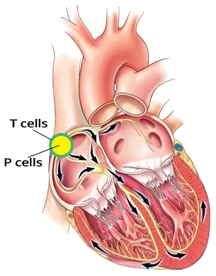
- Nút xoang nhĩ (Sinoatrial – SA node) gồm 2 loại tế bào
- Tế bào P
- Đây là các tế bào tạo nhịp (Pacemaker cells — "pacemaker" nghĩa là "người định nhịp")
- Chúng phát ra xung động trong nút xoang nhĩ và quyết định tần số tim
- Chúng có đặc tính tự động (automaticity)
- Nằm ở phần trung tâm của nút xoang nhĩ
- Nếu tế bào P bị tổn thương, sẽ có rối loạn quá trình phát xung động:
- Ngừng xoang tạm thời (Sinus Pause / Sinus Arrest)
- Tế bào T
- Đây là các tế bào dẫn truyền (Transport cells)
- Nằm quanh nút xoang nhĩ
- Chúng dẫn truyền xung động từ tế bào P tới nhĩ và các đường liên nút (internodal pathways)
- Nếu xung động không đi qua được tế bào T, sóng P sẽ không được tạo ra
- Nếu tế bào T bị tổn thương
- Quá trình phát xung động vẫn nguyên vẹn (tế bào P)
- Xuất hiện rối loạn dẫn truyền xung động:
- Block xoang nhĩ độ I
- Block xoang nhĩ độ II – Type I (Wenckebach)
- Block xoang nhĩ độ II – Type II
- Block xoang nhĩ độ III (block xoang nhĩ hoàn toàn)
Block xoang nhĩ độ I
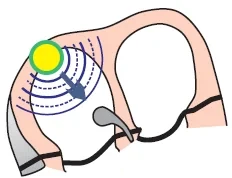
- Nút xoang nhĩ phát xung động đều đặn
- Tế bào P nguyên vẹn
- Block xoang nhĩ độ I là tình trạng dẫn truyền qua tế bào T bị kéo dài
- Xung động đi chậm hơn (qua tế bào T) từ tế bào P tới nhĩ
ECG và block xoang nhĩ độ I
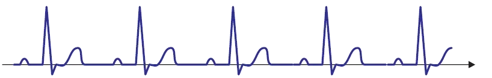
- ECG cho thấy nhịp xoang (thấy được các sóng P sinh lý)
- Không thể phân biệt block xoang nhĩ độ I với nhịp xoang
Nhịp xoang (hay block xoang nhĩ độ I?)
- Sóng P sinh lý
- Sóng P là đặc điểm nền tảng của nhịp xoang
- Điểm bắt đầu của sóng P là lúc xung động đi từ nút xoang nhĩ (từ tế bào T) sang nhĩ
- Nhịp xoang và block xoang nhĩ độ I có hình ảnh ECG giống nhau
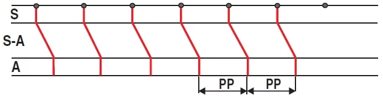
Nhịp xoang
- Sơ đồ bậc thang (laddergram) minh hoạ đường đi của xung động qua hệ thống dẫn truyền
- S – tế bào P (nút xoang nhĩ), S-A – tế bào T (vùng nối xoang nhĩ), A – nhĩ
- Trong nhịp xoang, nút xoang nhĩ (tế bào P) phát xung động đều đặn (các điểm màu xanh lá)
- Mỗi xung động nhanh chóng tới tế bào T (S-A), nơi dẫn truyền bị làm chậm lại
- Sau đó xung động từ tế bào T (S-A) đi sang nhĩ (A – điểm bắt đầu của sóng P)
- Khoảng PP là như nhau trên ECG
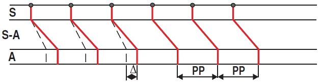
Block xoang nhĩ độ I
- Nút xoang nhĩ (tế bào P) phát xung động đều đặn (các điểm màu xanh lá)
- Mỗi xung động nhanh chóng tới tế bào T (S-A), nơi dẫn truyền bị làm chậm lại
- Dẫn truyền ở vùng (S-A) bị kéo dài so với nút xoang nhĩ sinh lý
- Sau đó xung động từ tế bào T (S-A) đi sang nhĩ (A – điểm bắt đầu của sóng P)
- Khoảng PP trên ECG hoàn toàn giống như trong nhịp xoang
- Không thể phân biệt nhịp xoang với block xoang nhĩ độ I dựa trên ECG
- Thăm dò điện sinh lý (electrophysiological testing) được dùng để chẩn đoán
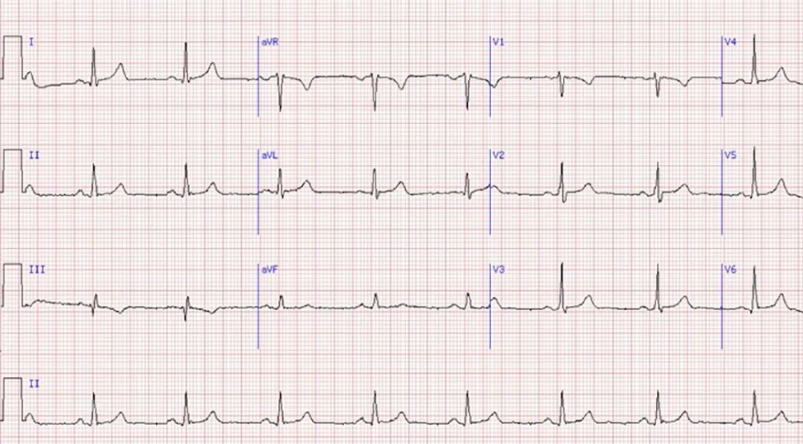
Nhịp xoang
- Tần số: 60/phút.
- Sóng P sinh lý
- Dương (I, II)
- Âm (aVR)
- Khoảng PQ (0,18s)
- Phức bộ QRS hẹp (0,1s)
- Block xoang nhĩ độ I và nhịp xoang có hình ảnh ECG giống nhau
- Block xoang nhĩ độ I là một chẩn đoán rất hiếm
- Và mọi người khoẻ mạnh đều có nhịp xoang
- Chẩn đoán xác định được đưa ra bằng thăm dò điện sinh lý
- Block xoang nhĩ độ I là một chẩn đoán rất hiếm
Bài 2. Block xoang nhĩ độ II – Type I (Wenckebach) — ECG
Block xoang nhĩ (SA) độ II, type I (Wenckebach)
Nút xoang nhĩ (tế bào P và tế bào T)
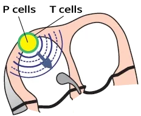
- Nút xoang nhĩ gồm 2 loại tế bào
- Tế bào P (tế bào tạo nhịp — pacemaker cells)
- Phát xung động trong nút xoang nhĩ, và quyết định tần số tim
- Tế bào T (tế bào chuyển tiếp — transitional cells)
- Dẫn truyền xung động từ tế bào P tới nhĩ và các đường liên nút
- Nếu xung động không đi qua được tế bào T, sóng P sẽ không xuất hiện
Hiện tượng Wenckebach
- Hiện tượng Wenckebach là một rối loạn của hệ thống dẫn truyền
- Trong đó có sự kéo dài dần dần thời gian dẫn truyền xung động qua một phần nhất định của hệ thống dẫn truyền
- Cho tới khi xung động bị block, rồi chu kỳ lặp lại
- Đây là một diễn tiến bệnh lý có tính chu kỳ của hiện tượng dẫn truyền giảm dần (decremental conduction)
- Hiện tượng này được bác sĩ nội khoa người Hà Lan Karel Frederik Wenckebach mô tả khi chưa có ECG
- Ông khám mạch ở động mạch quay của một phụ nữ có than phiền mạch không đều
- Block xoang nhĩ độ II, Type I (Wenckebach)
- Có sự kéo dài dần dần thời gian dẫn truyền qua nút xoang nhĩ (tế bào T)
- Block nhĩ thất độ II, Mobitz I (Wenckebach)
- Có sự kéo dài dần dần thời gian dẫn truyền qua nút nhĩ thất
Block xoang nhĩ độ II – Type I (Wenckebach)
- Nút xoang nhĩ phát xung động đều đặn
- Tế bào P nguyên vẹn
- Tại thời điểm xung động đi ra khỏi nút xoang nhĩ (ở tế bào T), xuất hiện hiện tượng Wenckebach
- Thời gian dẫn truyền xung động ở đường ra của nút xoang nhĩ kéo dài dần
- Cho tới khi xung động bị block, và chu kỳ lặp lại
ECG và block xoang nhĩ độ II – Type I (Wenckebach)
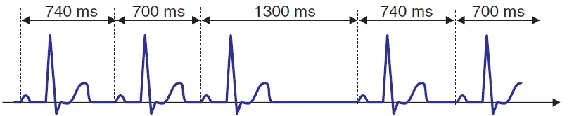
- ECG cho thấy nhịp xoang (ta thấy được các sóng P sinh lý)
- Khoảng PP ngắn dần cho tới khi xuất hiện một khoảng nghỉ
- Khoảng nghỉ ngắn hơn hai lần khoảng PP ngắn nhất (2PP)
- Khoảng PQ không thay đổi (nút nhĩ thất nguyên vẹn)
Block xoang nhĩ độ II – Type I (Wenckebach)
- Khoảng PP ngắn dần từ 740ms xuống 700ms
- Rồi xung động từ nút xoang nhĩ bị block và tiếp theo là một khoảng nghỉ 1300ms
- Khoảng PP có chứa khoảng nghỉ (1300) ngắn hơn hai lần khoảng PP ngắn nhất (2 x 700 = 1400)
- Khoảng PQ hằng định (vì nút nhĩ thất nguyên vẹn)
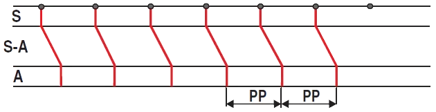
Nhịp xoang
- Sơ đồ bậc thang minh hoạ đường đi của xung động qua hệ thống dẫn truyền
- S – tế bào P (nút xoang nhĩ), S-A – tế bào T (vùng nối xoang nhĩ), A – nhĩ
- Trong nhịp xoang, nút xoang nhĩ (tế bào P) phát xung động đều đặn (các điểm màu xanh lá)
- Mỗi xung động nhanh chóng tới tế bào T (S-A), nơi dẫn truyền bị làm chậm lại
- Sau đó xung động từ tế bào T (S-A) đi sang nhĩ (A – điểm bắt đầu của sóng P)
- Khoảng PP hằng định trên ECG
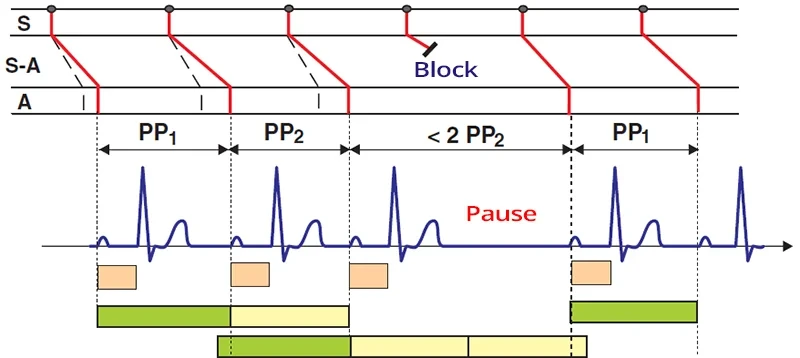
Block xoang nhĩ độ II – Type I (Wenckebach)
- Sơ đồ bậc thang: S – tế bào P (nút xoang nhĩ), S-A – tế bào T (vùng nối xoang nhĩ), A – nhĩ
- Nút xoang nhĩ (tế bào P) phát xung động đều đặn (các điểm màu xanh lá)
- Ở tế bào T – vùng nối xoang nhĩ (S-A), thời gian dẫn truyền xung động từ nút xoang nhĩ sang nhĩ kéo dài dần
- Vì vậy, khoảng PP ngắn lại (PP₁ > PP₂)
- Rồi xuất hiện một khoảng nghỉ, ngắn hơn hai lần khoảng PP ngắn nhất
- PP₂ khoảng nghỉ < 2PP₂
- Trong khoảng nghỉ, nút xoang nhĩ (tế bào T) được "nghỉ", nên xung động kế tiếp được dẫn truyền nhanh hơn
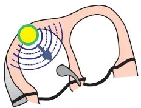
Nhịp xoang
- Tần số: 60/phút.
- Sóng P sinh lý
- Dương (I, II)
- Âm (aVR)
- Khoảng PQ (0,18s)
- Phức bộ QRS hẹp (0,1s)
- Block xoang nhĩ độ I và nhịp xoang có hình ảnh ECG giống nhau
- Block xoang nhĩ độ I là một chẩn đoán rất hiếm
- Và mọi người khoẻ mạnh đều có nhịp xoang
- Chẩn đoán xác định được đưa ra bằng thăm dò điện sinh lý
- Block xoang nhĩ độ I là một chẩn đoán rất hiếm
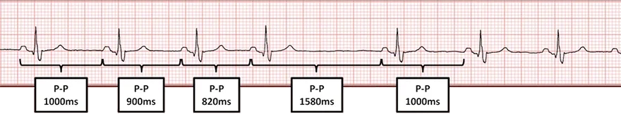
Block xoang nhĩ độ II, Type I (Wenckebach)
- Khoảng PP ngắn lại (1000ms... 820ms)
- Khoảng PP có sóng P bị mất (1580ms) ngắn hơn
- So với hai lần khoảng PP ngắn nhất (2 x 820 = 1640ms)
- Khoảng PQ hằng định
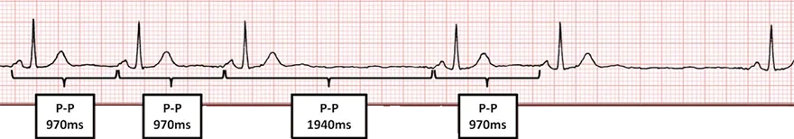
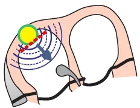
Block xoang nhĩ độ II – Type II
- Khoảng PP hằng định (970ms)
- Khoảng PP có sóng P bị mất (1940ms) bằng đúng
- Hai lần khoảng PP không có khoảng nghỉ (2 x 970 = 1940)
- Khoảng PQ hằng định
- Block xoang nhĩ độ II – Type II
- Nút xoang nhĩ phát xung động đều đặn
- Thời gian dẫn truyền xung động từ nút xoang nhĩ không kéo dài
- Xung động từ nút xoang nhĩ bị block từng lúc (khoảng nghỉ PP)
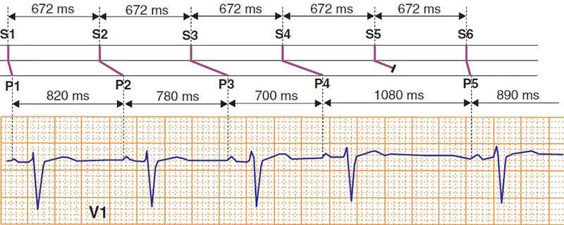
Block xoang nhĩ độ II, Type I (Wenckebach)
- Sơ đồ bậc thang
- Minh hoạ đường đi của xung động qua hệ thống dẫn truyền
- Nút xoang nhĩ phát xung động đều đặn S1-S6 (672ms)
- Thời gian dẫn truyền xung động tới nhĩ qua vùng nối xoang nhĩ kéo dài dần
- Các khoảng PP ngắn lại P1-P4 (820... 700ms)
- Xuất hiện một khoảng nghỉ PP (1080ms), ngắn hơn
- Hai lần khoảng PP ngắn nhất (2 x 700 = 1400ms)
Bài 3. Block xoang nhĩ độ II – Type II — ECG
Block xoang nhĩ (SA) độ II, type II (block đường ra xoang nhĩ — SA exit block)
Nút xoang nhĩ (tế bào P và tế bào T)
- Nút xoang nhĩ gồm 2 loại tế bào
- Tế bào P (tế bào tạo nhịp — pacemaker cells)
- Phát xung động trong nút xoang nhĩ và quyết định tần số tim
- Tế bào T (tế bào dẫn truyền — transport cells)
- Dẫn truyền xung động từ tế bào P tới nhĩ và các đường liên nút
- Nếu xung động không đi qua được tế bào T thì sóng P sẽ không được tạo ra
Block xoang nhĩ độ II – Type II
- Nút xoang nhĩ phát xung động đều đặn
- Tế bào P nguyên vẹn
- Rối loạn xảy ra ở đường ra của xung động khỏi nút xoang nhĩ (ở tế bào T)
- Đây là tình trạng block từng lúc các xung động khởi phát từ nút xoang nhĩ (ở tế bào T)
- Xung động bị block không tạo ra sóng P
- Nếu tình trạng mất sóng P kéo dài hơn 2 giây, thì được coi là block xoang nhĩ độ III
ECG và block xoang nhĩ độ II – Type II
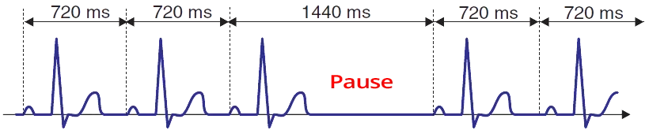
- Trên ECG có nhịp xoang (ta thấy được các sóng P sinh lý)
- Khoảng PP hằng định vì nút xoang nhĩ (tế bào P) phát xung động đều đặn
- Tuy nhiên, một số xung động bị block khi đi ra khỏi nút xoang nhĩ (không sóng P nào được tạo ra), dẫn tới một khoảng nghỉ PP
- Khoảng nghỉ PP bằng đúng hai lần khoảng PP không có khoảng nghỉ
- Khoảng PQ không thay đổi (nút nhĩ thất nguyên vẹn)
Block xoang nhĩ độ II – Type II
- Khoảng PP không thay đổi (720ms)
- Xung động bị block khi đi ra khỏi nút xoang nhĩ, tạo ra một khoảng nghỉ 1440ms
- Xung động đã được phát ra trong nút xoang nhĩ nhưng không được dẫn truyền tới nhĩ
- Khoảng PP có chứa khoảng nghỉ (1440ms) bằng đúng hai lần khoảng PP (2 x 720 = 1440)
Nhịp xoang
- Sơ đồ bậc thang cho thấy đường đi của xung động qua hệ thống dẫn truyền
- S – tế bào P (nút xoang nhĩ), S-A – tế bào T (vùng nối xoang nhĩ), A – nhĩ
- Trong nhịp xoang, nút xoang nhĩ (tế bào P) phát xung động đều đặn (các điểm màu xanh lá)
- Mỗi xung động nhanh chóng tới tế bào T (S-A), nơi dẫn truyền bị làm chậm lại
- Sau đó xung động từ tế bào T (S-A) đi lên nhĩ (A – điểm bắt đầu của sóng P)
- Khoảng PP là như nhau trên ECG
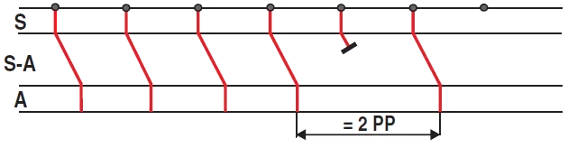
Block xoang nhĩ độ II – Type II
- Nút xoang nhĩ (tế bào P) phát xung động đều đặn (các điểm màu xanh lá)
- Xung động bị block ở vùng nối xoang nhĩ (S-A) và xuất hiện một khoảng nghỉ PP
- Khoảng PP có chứa khoảng nghỉ bằng đúng hai lần khoảng PP không có khoảng nghỉ
Nhịp xoang nhĩ
- Tần số: 60/phút.
- Sóng P sinh lý
- Dương (I, II)
- Âm (aVR)
- Khoảng PQ (0,18s)
- Phức bộ QRS hẹp (0,1s)
- Block xoang nhĩ độ I và nhịp xoang nhĩ có hình ảnh ECG giống nhau
- Block xoang nhĩ độ I là một chẩn đoán rất hiếm
- Và mọi người khoẻ mạnh đều có nhịp xoang nhĩ
- Chẩn đoán xác định được đưa ra bằng thăm dò điện sinh lý
- Block xoang nhĩ độ I là một chẩn đoán rất hiếm
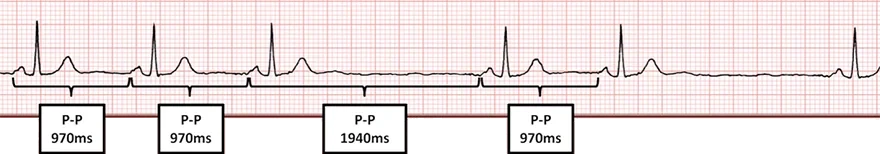
Block xoang nhĩ độ II – Type II
- Khoảng PP hằng định (970ms)
- Khoảng PP có sóng P bị mất (1940ms) bằng
- Đúng hai lần khoảng PP không có khoảng nghỉ (2 x 970 = 1940)
- Khoảng PQ hằng định
Block xoang nhĩ độ II, Type I (Wenckebach)
- Khoảng PP ngắn lại (1000ms... 820ms)
- Khoảng PP có sóng P bị mất (1580ms) ngắn hơn
- So với hai lần khoảng PP ngắn nhất (2 x 820 = 1640ms)
- Khoảng PQ hằng định
- Block xoang nhĩ độ II – Type I (Wenckebach)
- Thời gian dẫn truyền xung động qua tế bào T trong nút xoang nhĩ
- Kéo dài dần cho tới khi xung động bị block
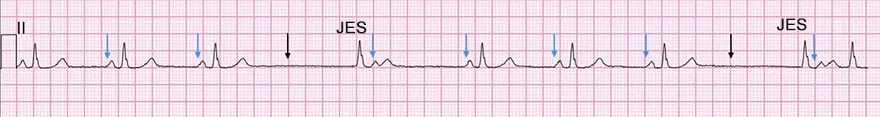
Block xoang nhĩ độ II – Type II và ngoại tâm thu bộ nối
- Các mũi tên chỉ thời điểm khử cực của nút xoang nhĩ
- Xanh dương – các xung động được dẫn truyền (có sóng P)
- Đen – các xung động không được dẫn truyền (không có sóng P)
- Khoảng PP có chứa khoảng nghỉ bằng đúng hai lần bất kỳ khoảng PP nào
- Khoảng RR có chứa khoảng nghỉ
- KHÔNG bằng đúng hai lần bất kỳ khoảng RR nào
- Phức bộ QRS thứ 4 và thứ 8 là ngoại tâm thu bộ nối (junctional extrasystole – JES)
- Theo sau là một sóng P và một sóng T
- Sau một khoảng nghỉ dài, vùng nối nhĩ thất được hoạt hoá
- Và đã tạo ra một ngoại tâm thu bộ nối
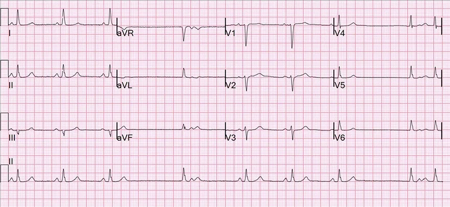
Block xoang nhĩ độ II – Type II và ngoại tâm thu bộ nối
- Chú ý chuyển đạo II ghi liên tục
- Khoảng PP có chứa khoảng nghỉ bằng đúng hai lần bất kỳ khoảng PP nào
- Khoảng RR có chứa khoảng nghỉ KHÔNG bằng hai lần bất kỳ khoảng RR nào
- Các phần diễn giải nằm trên ECG phía trên (bản ghi có các mũi tên xanh dương và đen)
- Trên ECG 12 chuyển đạo, để chẩn đoán các block xoang nhĩ
- Chuyển đạo II ghi liên tục được sử dụng
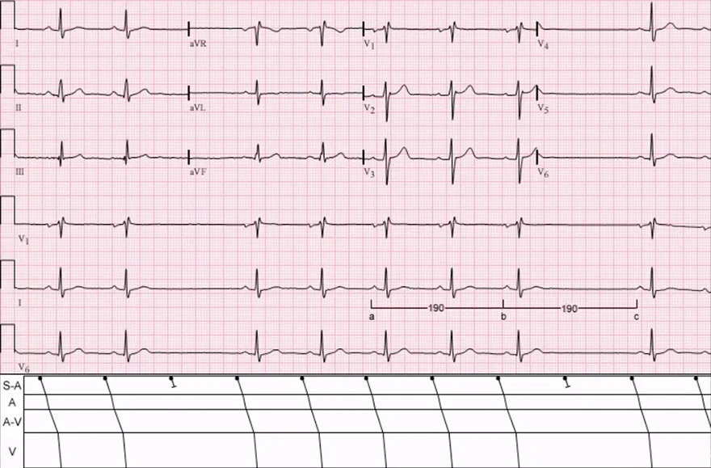
Block xoang nhĩ độ II – Type II
- Sơ đồ bậc thang
- Minh hoạ đường đi của xung động qua hệ thống dẫn truyền
- S-A – vùng nối xoang nhĩ, A – nhĩ, A-V – vùng nối nhĩ thất, V – thất
- Chú ý chuyển đạo V6 ghi liên tục (dưới cùng)
- Khoảng PP có chứa khoảng nghỉ bằng đúng hai lần bất kỳ khoảng PP nào
- 2 lần khoảng PP không có khoảng nghỉ (190) = khoảng PP có chứa khoảng nghỉ (190)
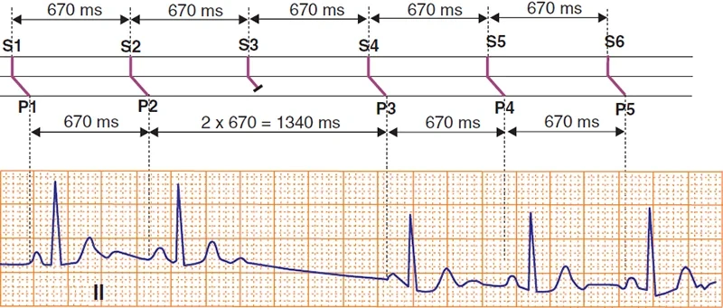
Block xoang nhĩ độ II – Type II
- Sơ đồ bậc thang
- Minh hoạ đường đi của xung động qua hệ thống dẫn truyền
- Nút xoang nhĩ phát xung động đều đặn S1-S6 (670ms)
- Việc dẫn truyền xung động tới nhĩ qua vùng nối xoang nhĩ bị block từng lúc
- Dẫn tới một khoảng nghỉ PP
- Khoảng nghỉ PP (1340ms) bằng đúng hai lần khoảng PP (2 x 670 = 1340ms)
Bài 4. Block xoang nhĩ độ III — ECG
Block xoang nhĩ (SA) độ III
Nút xoang nhĩ (tế bào P và tế bào T)
- Nút xoang nhĩ gồm 2 loại tế bào
- Tế bào P (tế bào tạo nhịp — pacemaker cells)
- Phát xung động trong nút xoang nhĩ và quyết định tần số tim
- Tế bào T (tế bào dẫn truyền — transport cells)
- Mang xung động từ tế bào P tới nhĩ và các đường liên nút
- Nếu xung động không đi qua được tế bào T thì sóng P không xuất hiện
Block xoang nhĩ độ III
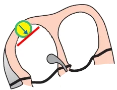
- Nút xoang nhĩ phát xung động đều đặn
- Tế bào P nguyên vẹn
- Vấn đề nằm ở đường ra của xung động khỏi nút xoang nhĩ (ở tế bào T)
- Trên ECG xuất hiện một khoảng nghỉ PP (không có sóng P nào)
- Khoảng nghỉ PP phải > 2 giây
- Nếu khoảng nghỉ ngắn hơn thì đó là block xoang nhĩ độ II – Type II
ECG và block xoang nhĩ độ III
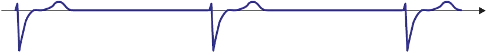
- Không có sóng P nào trên ECG
- Một nhịp dự phòng được hoạt hoá, thường gặp nhất là nhịp bộ nối
- Nhịp bộ nối được hoạt hoá sau khoảng 3 giây vô tâm thu
- Nếu nhịp xoang tái hoạt hoá, thì
- Khoảng nghỉ PP bằng X lần khoảng PP xoang
- Khi block xoang nhĩ độ III xuất hiện, tất cả xung động đều bị block (các sóng P biến mất)
Block xoang nhĩ độ III
- Nhịp bộ nối
- Không có sóng P
- Block xoang nhĩ độ III thường không thể phân biệt được với ngừng xoang (ngừng hoạt động nút xoang nhĩ) trên ECG
- Block xoang nhĩ độ III
- Nút xoang nhĩ vẫn phát xung động, nhưng tất cả đều bị block ở đường ra tại tế bào T
- Khoảng nghỉ PP > 2 giây
- Không có sóng P nào trên ECG
- Khoảng nghỉ PP bằng X lần khoảng PP
- Ngừng xoang (ngừng hoạt động nút xoang nhĩ)
- Nút xoang nhĩ không phát xung động
- Không có sóng P nào trên ECG
- Khoảng nghỉ PP không bằng X lần khoảng PP
- Block xoang nhĩ độ III
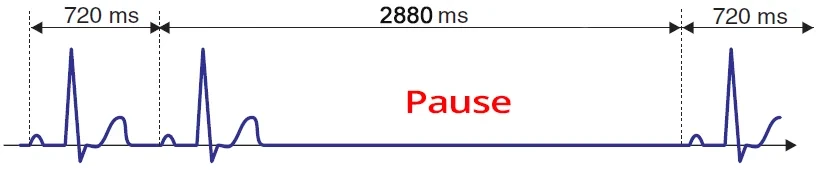
Block xoang nhĩ độ III và nhịp xoang
- Ban đầu, tôi thấy 2 sóng P (nhịp xoang)
- Rồi tiếp theo là một khoảng nghỉ PP
- Có thể là block xoang nhĩ độ III hoặc ngừng xoang
- Sau khoảng 3 giây, nhịp xoang đã tái hoạt hoá
- Vì các tế bào T trong nút xoang nhĩ đã thôi không block xung động nữa
- Khoảng nghỉ PP 2880ms bằng X lần khoảng PP (4x720 = 2880)
- Vì vậy, trên ECG đây là một block xoang nhĩ độ III
Nhịp xoang
- Sơ đồ bậc thang minh hoạ đường đi của xung động qua hệ thống dẫn truyền
- S – tế bào P (nút xoang nhĩ), S-A – tế bào T (vùng nối xoang nhĩ), A – nhĩ
- Trong nhịp xoang, nút xoang nhĩ (tế bào P) phát xung động đều đặn (các điểm màu xanh lá)
- Mỗi xung động nhanh chóng tới tế bào T (S-A), nơi dẫn truyền bị làm chậm lại
- Sau đó xung động từ tế bào T (S-A) đi lên nhĩ (A – điểm bắt đầu của sóng P)
- Khoảng PP là như nhau trên ECG
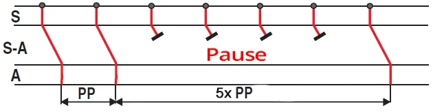
Block xoang nhĩ độ III
- Nút xoang nhĩ (tế bào P) phát xung động đều đặn (các điểm màu xanh lá)
- Tuy nhiên, các xung động bị block ở vùng nối S-A (tế bào T), dẫn tới một khoảng nghỉ PP
- Nếu chức năng của tế bào T được hồi phục sau một block xoang nhĩ độ III
- Thì khoảng nghỉ PP bằng X lần khoảng PP không có khoảng nghỉ
Nhịp xoang nhĩ
- Tần số tim: 60/phút.
- Sóng P sinh lý
- Dương (I, II)
- Âm (aVR)
- Khoảng PQ (0,18s)
- Phức bộ QRS bình thường (0,1s)
- Block xoang nhĩ độ I và nhịp xoang nhĩ có hình ảnh ECG giống nhau
- Block xoang nhĩ độ I là một chẩn đoán rất hiếm
- Và mọi người khoẻ mạnh đều có nhịp xoang nhĩ
- Chẩn đoán xác định được đưa ra bằng thăm dò điện sinh lý
- Block xoang nhĩ độ I là một chẩn đoán rất hiếm
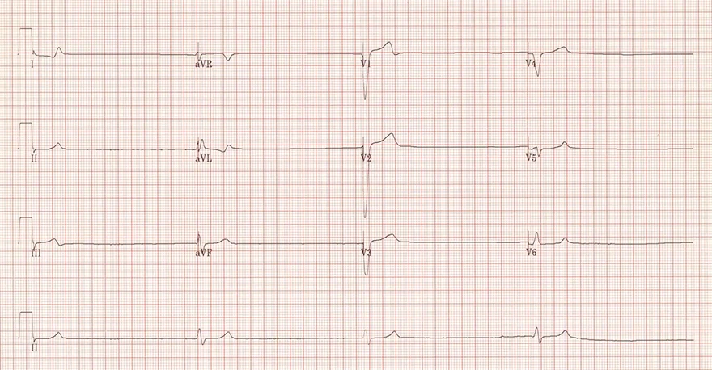
Block xoang nhĩ độ III
- Nhịp thất (QRS > 0,12s)
- Tần số tim: 25/phút.
- QRS có hình dạng block nhánh trái
- Ổ ngoại vị thất nằm ở thất phải
- Không có sóng P
- Trên ECG không có khoảng PP xoang,
cũng không có khoảng PP chứa khoảng nghỉ- Vì vậy, đây cũng có thể là ngừng xoang
Block xoang nhĩ độ II – Type II
- Khoảng PP là như nhau (970ms)
- Khoảng PP có sóng P bị mất (1940ms) bằng
- Đúng hai lần khoảng PP không có khoảng nghỉ (2 x 970 = 1940)
- Khoảng PQ hằng định
- Nếu khoảng nghỉ PP > 2 giây, thì đó sẽ là block xoang nhĩ độ III
- Loại này gần như luôn kéo dài
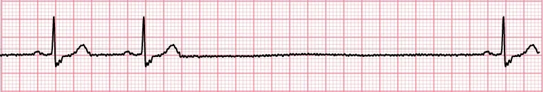
Block xoang nhĩ độ III
- Ban đầu có 2 sóng P xoang
- Rồi tiếp theo là một khoảng nghỉ (không có sóng P)
- Khoảng nghỉ này bằng đúng 4 lần khoảng PP
- Trong khoảng nghỉ, nút xoang nhĩ vẫn phát xung động
- Nhưng chúng bị block (không thấy sóng P nào)
- Nếu nút xoang nhĩ tạm thời ngừng phát xung động (ngừng xoang)
- Thì khoảng nghỉ sẽ không phải là một số nguyên lần khoảng PP
- Khoảng nghỉ kéo dài 4 giây, sau đó nhịp xoang được tái hoạt hoá
- Thông thường, sau 3 giây vô tâm thu thì nhịp bộ nối được hoạt hoá
- Nếu khoảng nghỉ < 2 giây (chỉ block 1 sóng P)
- Thì đó sẽ là block xoang nhĩ độ II – Type II
- Trong khoảng nghỉ, nút xoang nhĩ vẫn phát xung động
- Block xoang nhĩ độ III kéo dài
- Đây là một ECG hiếm gặp trong đó nhịp xoang đã tái hoạt hoá
Bài 5. Ngừng xoang — ECG
Ngừng xoang tạm thời (sinus pause), ngừng xoang (sinus arrest)
Nút xoang nhĩ (tế bào P và tế bào T)
- Nút xoang nhĩ gồm 2 loại tế bào
- Tế bào P (tế bào tạo nhịp — pacemaker cells)
- Phát xung động trong nút xoang nhĩ và quyết định tần số tim
- Tế bào T (tế bào dẫn truyền — transport cells)
- Dẫn truyền xung động từ tế bào P tới nhĩ và các đường liên nút
- Nếu xung động không đi qua được tế bào T, sóng P không xuất hiện
Ngừng xoang tạm thời (ngừng xoang)
- Nút xoang nhĩ ngừng lại (ngừng phát xung động)
- Tế bào P ngừng phát xung động
- Khoảng ngừng (ngừng xoang) phải kéo dài ít nhất 2 giây
- Ngừng xoang tạm thời (sinus pause) và ngừng xoang (sinus arrest)?
- Không có sự phân định chính xác; vậy khác biệt giữa ngừng xoang tạm thời và ngừng xoang là gì?
- Ngừng xoang tạm thời (sinus pause)
- Nút xoang nhĩ ngừng phát xung động
- Một nhịp thay thế (nhịp bộ nối hoặc nhịp thất) khởi phát
- Ngừng xoang (sinus arrest)
- Nút xoang nhĩ ngừng phát xung động
- Không có nhịp thay thế nào tiếp nối
- Đó là vô tâm thu (không có phức bộ QRS nào)
ECG và ngừng xoang tạm thời (ngừng xoang)
- Trên ECG, KHÔNG có sóng P (nút xoang nhĩ đã ngừng)
- Gần như luôn luôn, sau khoảng 3 giây vô tâm thu, một nhịp bộ nối được hoạt hoá
- Nếu nhịp xoang tái hoạt hoá, thì
- Khoảng nghỉ PP KHÔNG phải là một số nguyên lần khoảng PP xoang
- Đây là khác biệt chính trên ECG so với block xoang nhĩ độ III
Ngừng xoang tạm thời
- Nhịp bộ nối
- Không có sóng P
- Ngừng xoang tạm thời thường không thể phân biệt được với block xoang nhĩ độ III dựa trên ECG
- Ngừng xoang tạm thời
- Nút xoang nhĩ không phát xung động
- Không có sóng P trên ECG
- Khoảng nghỉ PP không phải là một số nguyên lần khoảng PP
- Block xoang nhĩ độ III
- Nút xoang nhĩ vẫn phát xung động, nhưng tất cả đều bị block tại tế bào T
- Khoảng nghỉ PP > 2 giây
- Không có sóng P trên ECG
- Khoảng nghỉ PP là một số nguyên lần khoảng PP
- Ngừng xoang tạm thời
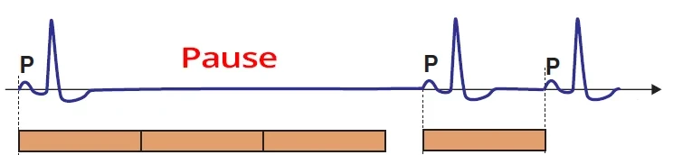
Ngừng xoang tạm thời
- Ở đầu bản ghi có một nhát bóp xoang (kèm sóng P)
- Tiếp theo là một khoảng ngừng xoang
- Khoảng nghỉ PP KHÔNG phải là một số nguyên lần khoảng PP xoang
- Nút xoang nhĩ đã ngừng rồi sau đó khởi động lại (bắt đầu phát xung động trở lại)
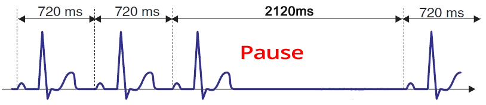
Ngừng xoang tạm thời
- Ở đầu bản ghi có nhịp xoang
- Khoảng PP (720ms)
- Khoảng nghỉ PP (2120ms) không phải là một số nguyên lần khoảng PP xoang (3 x 720 = 2160ms)
- Nút xoang nhĩ đã ngừng rồi sau đó phát xung động trở lại
Nhịp xoang
- Sơ đồ bậc thang minh hoạ đường đi của xung động qua hệ thống dẫn truyền
- S – tế bào P (nút xoang nhĩ), S-A – tế bào T (vùng nối xoang nhĩ), A – nhĩ
- Trong nhịp xoang, nút xoang nhĩ (tế bào P) phát xung động đều đặn (các điểm màu xanh lá)
- Mỗi xung động nhanh chóng tới tế bào T (S-A), nơi dẫn truyền bị làm chậm lại
- Sau đó xung động từ tế bào T (S-A) đi tới nhĩ (A – điểm bắt đầu của sóng P)
- Khoảng PP là như nhau trên ECG
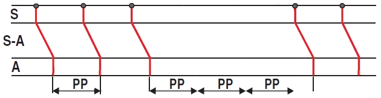
Ngừng xoang tạm thời
- Nút xoang nhĩ (tế bào P) phát xung động đều đặn (các điểm màu xanh lá)
- Nút xoang nhĩ ngừng lại rồi sau đó khởi động lại
- Khoảng nghỉ PP KHÔNG bằng X lần khoảng PP xoang
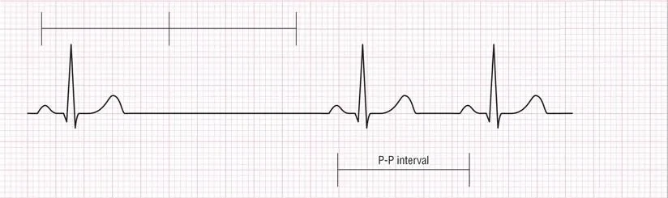
Ngừng xoang tạm thời
- Khoảng nghỉ PP KHÔNG bằng X lần khoảng PP xoang
- Nút xoang nhĩ đã ngừng, rồi sau đó khởi động lại
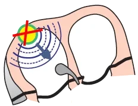
Ngừng xoang tạm thời
- Nhịp thất (QRS > 0,12s)
- Tần số: 25/phút.
- QRS có hình dạng block nhánh trái
- Ổ ngoại vị thất nằm ở thất phải
- Không có sóng P
- Trên ECG không có khoảng PP xoang, cũng không có khoảng PP chứa khoảng nghỉ
- Vì vậy, đây cũng có thể là block xoang nhĩ độ III
Block xoang nhĩ độ III
- Ban đầu có 2 sóng P xoang
- Rồi tiếp theo là một khoảng nghỉ (không có sóng P)
- Khoảng nghỉ này bằng đúng 4 lần khoảng PP
- Trong khoảng nghỉ, nút xoang nhĩ vẫn phát xung động
- Nhưng chúng bị block (không sóng P nào được tạo ra)
- Nếu nút xoang nhĩ tạm thời ngừng phát xung động (ngừng xoang tạm thời)
- Thì khoảng nghỉ sẽ không phải là một số nguyên lần khoảng PP
- Khoảng nghỉ kéo dài 4 giây, sau đó nhịp xoang được tái hoạt hoá
- Thông thường, sau 3 giây vô tâm thu thì nhịp bộ nối được hoạt hoá
- Nếu khoảng nghỉ < 2 giây (chỉ 1 sóng P bị block)
- Thì đó sẽ là block xoang nhĩ độ II – Type II
- Trong khoảng nghỉ, nút xoang nhĩ vẫn phát xung động
- Block xoang nhĩ độ III là tình trạng kéo dài
- Đây là một ECG hiếm gặp trong đó nhịp xoang đã được tái hoạt hoá
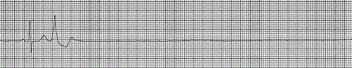
Ngừng xoang
- Sau một ngoại tâm thu thất, đã xảy ra vô tâm thu
- Nút xoang nhĩ đã ngừng (không có sóng P), và không có nhịp thay thế nào được hoạt hoá
- Chưa có sự đồng thuận về việc đây là ngừng xoang tạm thời hay ngừng xoang
- Đây cũng có thể là block xoang nhĩ độ III (nút xoang nhĩ vẫn phát xung động, nhưng tất cả đều bị block)
- Chẩn đoán xác định được đưa ra bằng thăm dò điện sinh lý
Bài 6. Vô tâm thu — ECG
Vô tâm thu (asystole), ngừng tim đột ngột (sudden cardiac arrest – SCA), đột tử do tim (sudden cardiac death – SCD), hoạt động điện vô mạch (pulseless electrical activity – PEA)
ECG và xung động điện
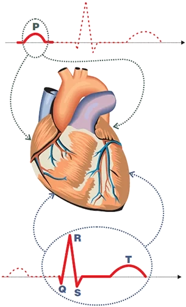
- Đường cong ECG minh hoạ đường lan truyền của xung động qua tim
- Xung động lan truyền
- Nhanh qua hệ thống dẫn truyền
- Chậm qua cơ tim co bóp (working myocardium)
- Cơ này sau đó co lại — xuất hiện thời kỳ tâm thu
- Đường cong ECG chủ yếu thể hiện:
- Sự lan truyền chậm của xung động trong cơ tim co bóp
- Xung động tạo ra một vectơ điện tim (cardiac vector) trong cơ tim co bóp
- Hoạt động điện trong cơ tim nhĩ tạo ra:
- Sóng P (khử cực nhĩ)
- Sóng Ta (tái cực nhĩ)
- Sóng này bị che lấp trong phức bộ QRS
- Hoạt động điện trong cơ tim thất tạo ra:
- Phức bộ QRS (khử cực thất)
- Sóng T (tái cực thất)
ECG và chu chuyển tim
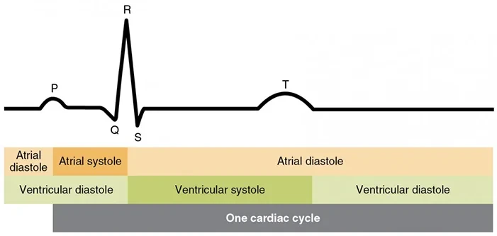
ECG và chu chuyển tim
- Điện thế hoạt động (action potential) được phản ánh trên đường cong ECG
- Và đường cong ECG cho phép nhận diện từng giai đoạn của chu chuyển tim
Vô tâm thu
- Hoạt động điện vô mạch (pulseless electrical activity)
- Tim vẫn hoạt động về điện, nhưng không hoạt động như một cái bơm (không có thời kỳ tâm thu và tâm trương hiệu quả)
- Bệnh nhân không bắt được mạch
- Các nguyên nhân thường gặp gồm:
- Giảm thể tích tuần hoàn và thiếu oxy
- Bệnh nhân có thể có nhịp nhanh xoang
- Nhưng khi giảm thể tích tuần hoàn thì các thất không được làm đầy (bệnh nhân không có mạch ngoại vi)
- Tim vẫn hoạt động về điện, nhưng không hoạt động như một cái bơm (không có thời kỳ tâm thu và tâm trương hiệu quả)
- Vô tâm thu (asystole)
- Đây là tình trạng mất hoàn toàn hoạt động điện và hoạt động cơ học của tim
- Trên ECG là một đường thẳng (không có điện thế hoạt động)
- Tim bị "tắt" về mặt điện
- Nguyên nhân giống như trong hoạt động điện vô mạch
- Thường không bắt được mạch cả trong nhịp nhanh thất và rung thất
- Tuy nhiên, 2 loạn nhịp nguy hiểm này không thuộc nhóm hoạt động điện vô mạch
- Vì chúng có thể sốc điện phá rung (bằng sốc điện)
- Hoạt động điện vô mạch và vô tâm thu không thể sốc điện phá rung
- Ngừng tim đột ngột (sudden cardiac arrest)
- Đây là tình trạng tim ngừng hoạt động một cách đột ngột, chủ yếu do loạn nhịp thất nguy hiểm
- Tim vẫn hoạt động về điện
- Các nguyên nhân thường gặp
- Nhịp nhanh thất (thất có tần số cao, thời kỳ tâm trương không hiệu quả)
- Rung thất (các thất rung lên)
- Bệnh nhân có thể được sốc điện phá rung
- Đột tử do tim (sudden cardiac death)
- Bệnh nhân tử vong do ngừng tim trong vòng 1 giờ kể từ khi khởi phát triệu chứng
ECG và vô tâm thu
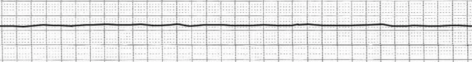
- Trên ECG là một đường thẳng (flatline)
- Bệnh nhân hôn mê
- Luôn kiểm tra xem bệnh nhân đã được dán điện cực ECG đúng cách hay chưa
Vô tâm thu
- Trên ECG là một đường thẳng
- Vô tâm thu không thể sốc điện phá rung
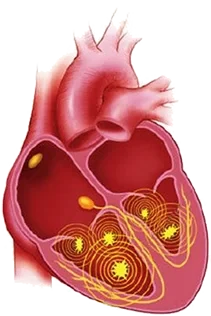
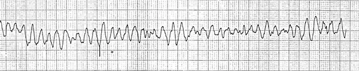
Rung thất
- Trong các thất có nhiều ổ phát xung
- Cơ chế thường gặp nhất là vi vòng vào lại (micro re-entry)
- Tần số 300-450/phút.
- Chiều rộng và biên độ của các phức bộ QRS thay đổi
- Các phức bộ QRS có biên độ thấp, và biên độ của chúng không xác định được chính xác
- Tim không hoạt động như một cái bơm (đang có tình trạng ngừng tim)
- Ở tần số cao như vậy, thời kỳ tâm trương không hiệu quả
- Các phức bộ QRS giảm dần biên độ và sau khoảng 2 phút thì xuất hiện vô tâm thu
- Rung thất vẫn còn có thể sốc điện phá rung được, còn vô tâm thu thì không thể sốc điện phá rung
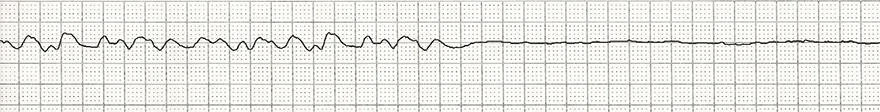
Rung thất và vô tâm thu
- Rung thất có thể xảy ra trong nhồi máu cơ tim
- Nếu điều trị – sốc điện phá rung không thành công, nó tiến triển thành vô tâm thu trong khoảng 2 phút
Bài 7. Block liên nhĩ — ECG
Chậm dẫn truyền liên nhĩ (interatrial conduction delay – IACD), block liên nhĩ (interatrial block)
Bó Bachmann
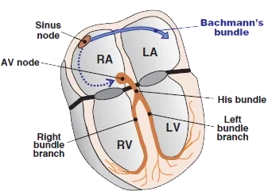
- Đây là phần liên nhĩ của hệ thống dẫn truyền của tim
- Nó đi từ nút xoang nhĩ tới nhĩ trái
- Nối nhĩ phải với nhĩ trái
- Nó đi từ nút xoang nhĩ tới nhĩ trái
- Dẫn truyền xung động từ nút xoang nhĩ tới nhĩ trái
- Bảo đảm sự hoạt hoá đồng bộ của hai nhĩ
Block liên nhĩ
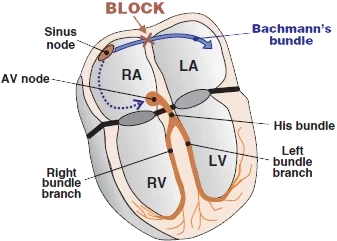
- Xảy ra do sự gián đoạn ở bó Bachmann
- Nhĩ trái được hoạt hoá muộn hơn
- Xảy ra ở 88% các trường hợp có dày nhĩ trái (P mitrale)
- Thường gặp ở nam giới trên 60 tuổi
- Block liên nhĩ đơn độc xảy ra khi có
- Xơ hoá nhĩ
- Sau một nhồi máu nhĩ
- Đây là một yếu tố nguy cơ cho sự xuất hiện của
- Rung nhĩ
- Cuồng nhĩ
- Hội chứng nút xoang bệnh lý (sick sinus syndrome)
ECG và block liên nhĩ
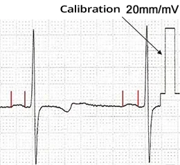
- Sóng P rộng > 0,12s
- Có một khấc ở giữa (được chỉ trên hình)
- Khoảng PQ không kéo dài
- Chỉ có sóng P bị rộng ra
- Để quan sát rõ hơn
- Dùng chuẩn thế cao hơn 20mm/mV
- Trên ECG không có ranh giới chính xác giữa
- P mitrale và block liên nhĩ
- Sóng P trong block liên nhĩ có biên độ thấp hơn
- Có 3 type block liên nhĩ
Các type block liên nhĩ
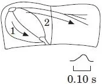
Sóng P bình thường
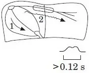
Block một phần
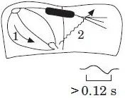
Block hoàn toàn
- Block liên nhĩ một phần (Type 1)
- Type thường gặp nhất
- Dẫn truyền qua bó Bachmann bị kéo dài (không bị gián đoạn)
- Sóng P rộng > 0,12s (có khấc ở giữa)
- Type xen kẽ (Type 2)
- Xen kẽ từng lúc giữa Type 1 và Type 3
- Block liên nhĩ hoàn toàn (Type 3)
- Bó Bachmann bị gián đoạn
- Nhĩ trái được hoạt hoá theo hướng ngược từ vùng nút nhĩ thất
- Sóng P rộng (> 0,12s) và hai pha
- Vectơ của nhĩ phải (1) hướng xuống
- Rồi vectơ của nhĩ trái (2) hướng lên
- Bó Bachmann bị gián đoạn
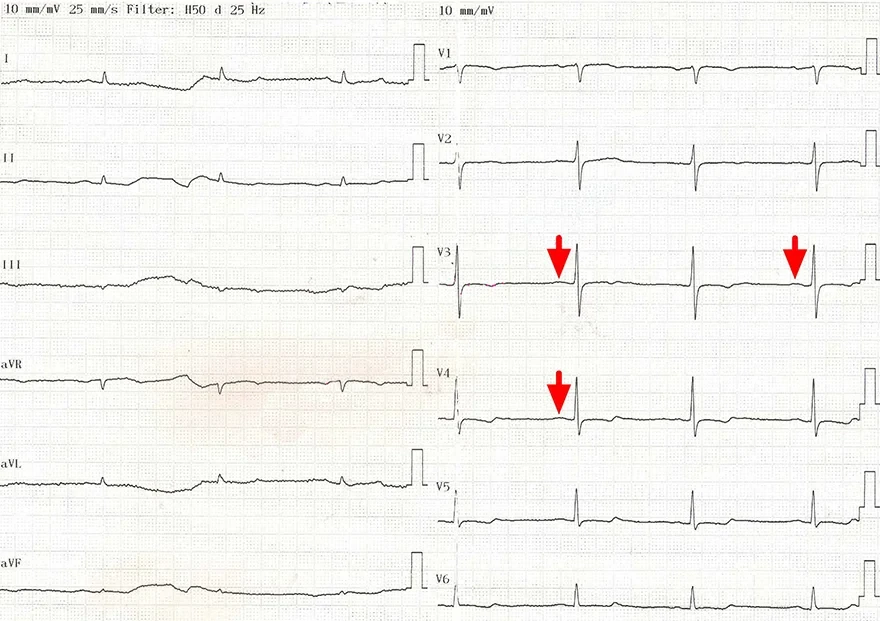
Nhịp xoang
- Nhịp xoang
- Tần số tim 42/phút
- Điện thế ECG tiêu chuẩn 10mm/mV
- Chiều cao vạch chuẩn thế 10mm (ở bên phải)
- Sóng P có biên độ thấp (các mũi tên đỏ)
- Vì vậy khó đánh giá hơn
- Ở các chuyển đạo V3-V4, nó có vẻ rộng ra
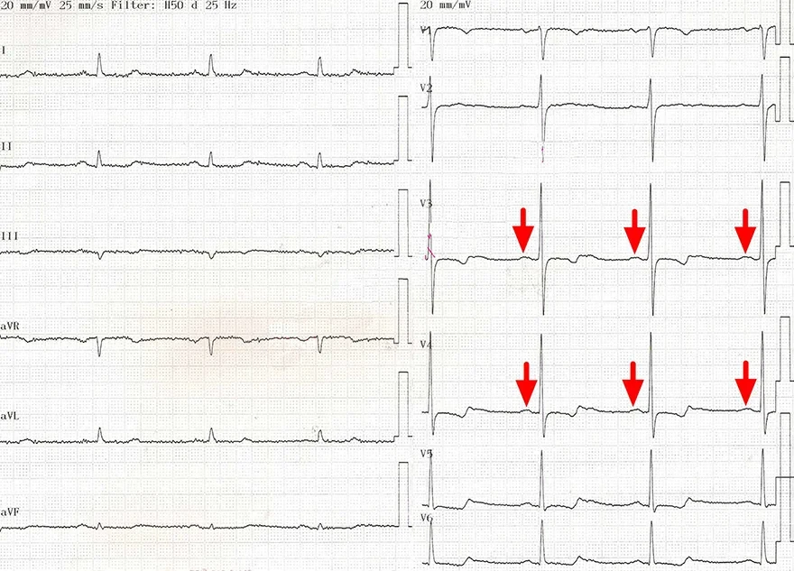
Block liên nhĩ
- Đây là một bản ghi ECG của cùng bệnh nhân ở hình trước
- Điện thế ECG được đặt ở 20mm
- Biên độ của các sóng ECG do đó cao gấp 2 lần
- Các sóng P (V3-V4) rộng > 0,12s và có biên độ thấp (các mũi tên đỏ)
- Điều này cho thấy một block liên nhĩ một phần (type 1)
- Đã được bộc lộ nhờ thay đổi chuẩn thế ECG
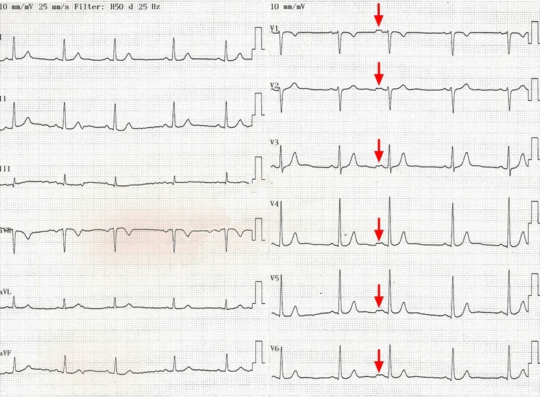
Block liên nhĩ
- Nhịp xoang
- Ngoại tâm thu nhĩ kèm block liên nhĩ
- Xung động từ ngoại tâm thu nhĩ bị block một phần ở bó Bachmann
- Các sóng P khác thì bình thường
- Sóng P thấp và rộng > 0,12s (có khấc) (các mũi tên đỏ)
- Điều này cho thấy một block liên nhĩ một phần (type 2)
- Xung động từ ngoại tâm thu nhĩ bị block một phần ở bó Bachmann
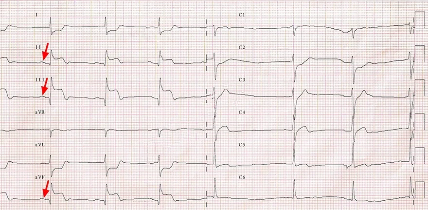
Block liên nhĩ và STEMI
- Nhồi máu cơ tim ST chênh lên cấp thành dưới
- ST chênh lên (II, III, aVF)
- Block liên nhĩ (type 1)
- Sóng P thấp và rộng > 0,12s (các mũi tên đỏ) (khấc được chỉ trên hình)
Block liên nhĩ
- Nhịp xoang
- Sóng P rộng, hai pha > 0,12 (chuyển đạo III)
- Điều này cho thấy một block liên nhĩ (type 3)
Block liên nhĩ và máy tạo nhịp
- Bệnh nhân có máy tạo nhịp được cấy
- Tạo nhịp nhĩ với tần số 60/phút (các mũi tên đỏ)
- Sau các gai tạo nhịp có một sóng P rộng (khó đánh giá hơn)
- Sóng P thấp và rộng > 0,12 (chuyển đạo II) — (các mũi tên xanh lá)
- Điều này cho thấy một block liên nhĩ (type 1)
- Sóng P sẽ được đánh giá tốt hơn với chuẩn thế 20mm
Nguồn tài liệu (Sources)
Nguồn: ECG BOOK — www.ecgbook.com
- ECG from Basics to Essentials Step by Step
- Litfl.com
- Ecgwaves.com
- Metealpaslan.com
- Medmastery.com
- Uptodate.com
- Ecgpedia.org
- Wikipedia.org
- Strong Medicine
- Understanding Pacemakers
Bản dịch được thực hiện từ 7 trang sau của ECG BOOK (www.ecgbook.com):
- First Degree SA Block
- Second Degree SA Block - Type I (Wenckebach)
- Second Degree SA Block - Type II
- Third Degree SA Block
- Sinus Arrest
- Asystole
- Interatrial Block